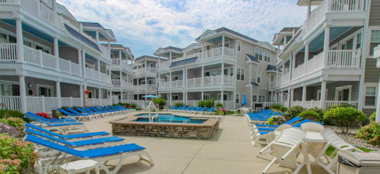
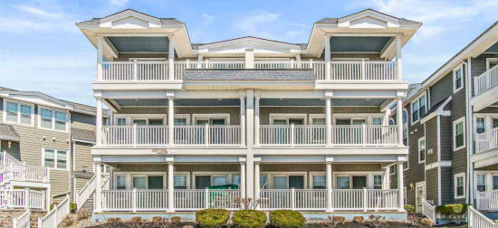
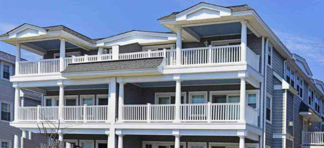
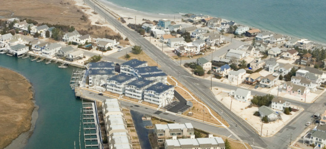

Windward Harbor Reconstruction





Project summary
Reconstruct 46 bayfront condominium units that were completely destroyed by fire.
- Acted as owner’s representative during the pre-construction, bidding and contract negotiation, and construction phases.
- Recommended solicitation of firm price competitive bids for entire project due to economic climate at the time because it would most benefit the owners.
- Focused on commercial contractors instead residential home builders because of size and complexity of the project.
- Project included driving over 1,000 new piles, new site and infrastructure work, and customizing the interior fit up to suit individual owners’ tastes.
- Handled invitation of bidders and extensive pre-qualification process.
- Represented best interests of the condo association during the following over a two year period:
- All contract award descope meetings
- Contract agreement negotiations
- Coordination of the procurement of all of the required building permits from the borough
- Bi-weekly construction phase job meetings
- Numerous other project coordination and change order discussions
- Carefully reviewed and critiqued numerous change orders for accuracy, code compliance, and fair pricing.
- Conducted final inspections and individual owner punch list approval.
- Ensured orderly move in and occupancy of the new community.
Budget
$12.8M
Timeframe
April 2005 - August 2007
Location
Avalon, NJ